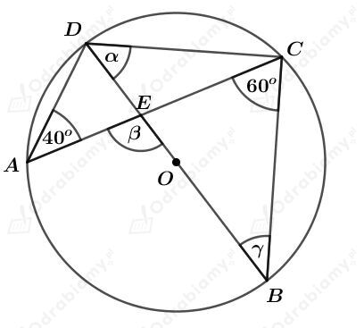
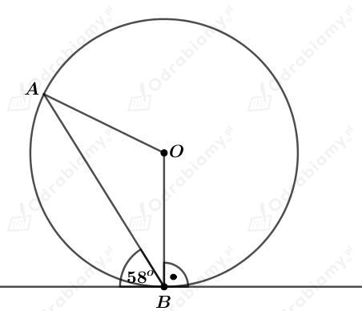
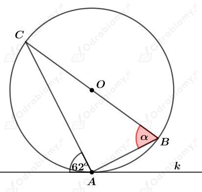
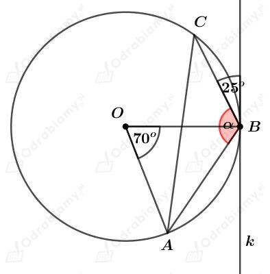
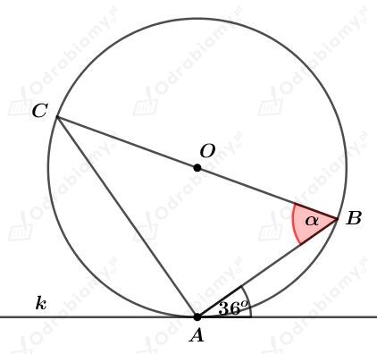
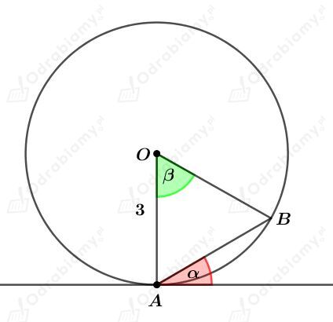

a)
W podręczniku przedstawiono rysunek na którym zaznaczono kąty 𝛼, 𝛽 i 𝛾.
Dany jest kąt środkowy o mierze 80o oparty na łuku podanego okręgu.
Kąty 𝛼 i 𝛽 są kątami wpisanymi w ten okrąg również opartymi na tym samym łuku tego okręgu. Zatem
oraz
Zauważmy, że trójkąt, którego kąty mają miary 𝛽 i 𝛾 jest trójkątem równoramiennym, ponieważ jego ramiona to promienie podanego okręgu. Więc:
Podsumowując, otrzymaliśmy:
b)
W podręczniku przedstawiono rysunek na którym zaznaczono kąty 𝛼, 𝛽 i 𝛾. Wiemy, że AB॥CD.
Kąty DCB i CBO są kątami naprzemianległymi, więc
Kąty BOD (kąt środkowy) oraz BCD (kąt wpisany) oparte są na tym samym łuku, więc
Korzystając z własności kątów przyległych wiemy, że
Niech punkt E będzie przecięciem odcinków BC i OD.
Rozważmy trójkąt OEB. Korzystając z faktu, że suma miar kątów w trójkącie wynosi 180o mamy:
Korzystając z własności kątów przyległych wiemy, że
Podsumowując, otrzymaliśmy:
c)
Rysunek:

Kąty DAC i DBC są kątami wpisanymi opartymi na tym samym łuku, więc
Rozważmy trójkąt BCD. Ponieważ bok trójkąta DB jest średnicą tego okręgu, to trójkąt ten jest prostokątny. Korzystając z faktu, że suma miar kątów w trójkącie wynosi 180o mamy:
Rozważmy trójkąt BCD. Korzystając z faktu, że suma miar kątów w trójkącie wynosi 180o mamy:
Korzystając z własności kątów przyległych wiemy, że
Podsumowując, otrzymaliśmy:
W okrąg o środku w punkcie O wpisano kąt ACB oraz poprowadzono styczną w punkcie A przechodzącą przez punkt P (rysunek w podręczniku).
Uzasadnimy, że
Styczna AP pada pod kątem prostym do promienia OA tego okręgu, więc
Ponieważ trójkąt ABO jest trójkątem równoramiennym, to
Rysunek:

Styczna pada pod kątem prostym do promienia, więc
Trójkąt ABO jest trójkątem równoramiennym, ponieważ jego ramiona to promienie podanego okręgu. Zatem
Korzystając z faktu, że suma miar kątów w trójkącie wynosi 180o mamy:
Odp. Kąty trójkąta ABO mają miary 32o, 32o i 116o.
a)
Rysunek:

Styczna k pada pod kątem prostym do promienia OA tego okręgu, więc
Trójkąt AOC jest trójkątem równoramiennym, ponieważ jego ramiona to promienie podanego okręgu. Zatem
Ponieważ bok BC trójkąta ABC jest średnicą tego okręgu, to trójkąt ten jest prostokątny. Korzystając z faktu, że suma miar kątów w trójkącie wynosi 180o mamy:
b)
Rysunek:

Trójkąt ABO jest trójkątem równoramiennym, ponieważ jego ramiona to promienie podanego okręgu. Zatem
Styczna k pada pod kątem prostym do promienia OA tego okręgu, więc
Zatem
c)
Rysunek:

Styczna k pada pod kątem prostym do promienia OA tego okręgu, więc
Trójkąt ABO jest trójkątem równoramiennym, ponieważ jego ramiona to promienie podanego okręgu. Zatem
Rysunek:

Wiedząc, że łuk AB ma długość 𝜋/2 otrzymujemy:
Trójkąt ABO jest trójkątem równoramiennym, ponieważ jego ramiona to promienie podanego okręgu. Zatem
Styczna pada pod kątem prostym do promienia, więc
a)
Wyznaczmy miarę kąta wewnętrznego dziesięciokąta foremnego. Mamy:
Wyznaczmy miarę kąta wewnętrznego dwunastokąta foremnego. Mamy:
b)
Dany jest n-kąt foremny. Niech n>3.
Wybierzmy jeden z jego wierzchołków. Prowadzimy przekątne tego wielokąta wychodzące z ustalonego wierzchołka. Liczba przekątnych wychodzących z tego wierzchołka wynosi n-2.
W ten sposób podzieliliśmy ten wielokąt na n-2 trójkątów.
Suma miar kątów wewnętrznych tego wielokąta to suma miar wszystkich kątów wewnętrznych tych trójkątów, czyli
Wyznaczmy miarę jednego kąta wewnętrznego tego wielokąta. Mamy:
a)
Dany jest n-kąt foremny, którego suma miar kątów wewnętrznych jest równa 540o. Mamy stąd:
Podany wielokąt jest pięciokątem foremnym.
Niech a będzie długością boku tego pięciokąta.
Z treści zadania wiemy, że jego obwód wynosi 20. Mamy stąd:
Bok tego pięciokąta ma długość 4.
b)
Dany jest n-kąt foremny, którego suma miar kątów wewnętrznych jest równa 1440o. Mamy stąd:
Podany wielokąt jest dziesięciokątem foremnym.
Niech a będzie długością boku tego dziesięciokąta.
Z treści zadania wiemy, że jego obwód wynosi 20. Mamy stąd:
Bok tego dziesięciokąta00 ma długość 2.